N-D Test Functions L¶
N-D Test Functions L¶Langermann test objective function.
This class defines the Langermann global optimization problem. This is a multimodal minimization problem defined as follows:
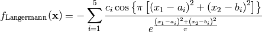
Here,  represents the number of dimensions and
represents the number of dimensions and ![x_i \in [0, 10]](_images/math/04492218e68759ff19d07231a62fe3a092015dfc.png) for
for  .
.
Two-dimensional Langermann function
Global optimum: 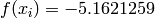 for 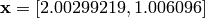
LennardJones test objective function.
This class defines the Lennard-Jones global optimization problem. This is a multimodal minimization problem defined as follows:
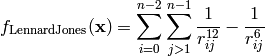
Where, in this exercise:
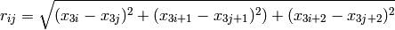
Valid for any dimension, 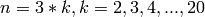.  is the number of atoms in 3-D space
constraints: unconstrained type: multi-modal with one global minimum; non-separable
is the number of atoms in 3-D space
constraints: unconstrained type: multi-modal with one global minimum; non-separable
Value-to-reach: 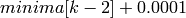. See array of minima below; additional minima available at the Cambridge cluster database:
http://www-wales.ch.cam.ac.uk/~jon/structures/LJ/tables.150.html
Here, represents the number of dimensions and 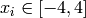 for  .
.
Global optimum:
![minima = [-1.,-3.,-6.,-9.103852,-12.712062,-16.505384,-19.821489,-24.113360, \\
-28.422532,-32.765970,-37.967600,-44.326801,-47.845157,-52.322627, \\
-56.815742,-61.317995, -66.530949,-72.659782,-77.1777043]](_images/math/561e39e42e2aa58f1f7ff7e55d73fad0965b603a.png)
Leon test objective function.
This class defines the Leon global optimization problem. This is a multimodal minimization problem defined as follows:
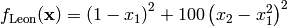
Here, represents the number of dimensions and 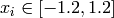 for .

Two-dimensional Leon function
Global optimum:  for
for  for
for
Levy 3 test objective function.
This class defines the Levy 3 global optimization problem. This is a multimodal minimization problem defined as follows:
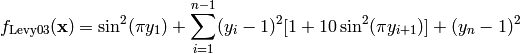
Where, in this exercise:
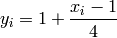
Here, represents the number of dimensions and ![x_i \in [-10, 10]](_images/math/d511ca3206c16bae3e3af3c02835f3fe9fb07286.png) for .
for .

Two-dimensional Levy 3 function
Global optimum: for for
Levy 5 test objective function.
This class defines the Levy 5 global optimization problem. This is a multimodal minimization problem defined as follows:
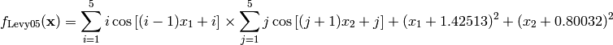
Here, represents the number of dimensions and for .

Two-dimensional Levy 5 function
Global optimum: 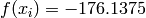 for 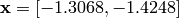.
Levy13 test objective function.
This class defines the Levy13 global optimization problem. This is a multimodal minimization problem defined as follows:
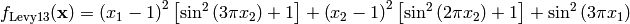
Here, represents the number of dimensions and for .
Two-dimensional Levy13 function
Global optimum: for for